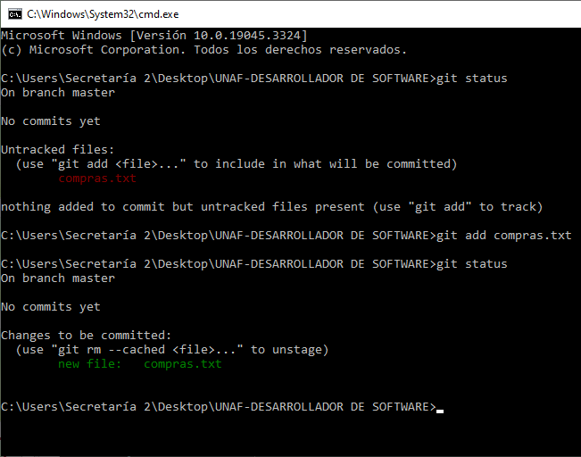
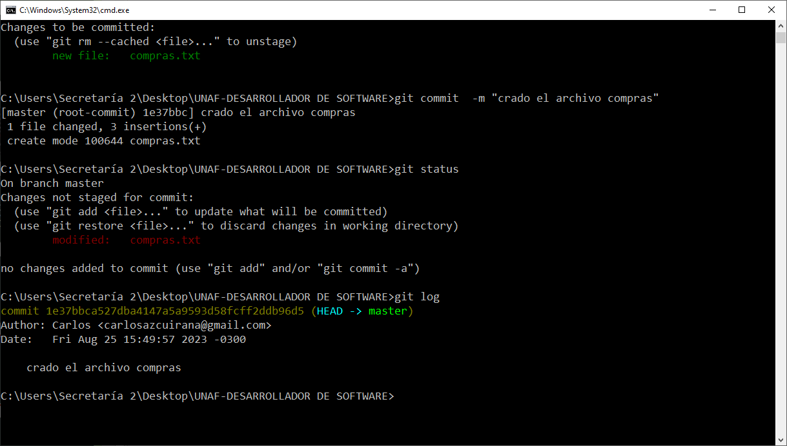

Comandos de Git Comandos de Git
Comandos de Git Comandos de GitEl comando git status te proporciona información sobre el estado actual de tu repositorio Git. Te muestra qué archivos están en el área de trabajo (working directory) y si han sido modificados, agregados al área de preparación (staging area) o si están listos para ser confirmados (committed).
git status
El comando git add se utiliza para agregar cambios realizados en los archivos al área de preparación (staging area). Estos cambios se preparan para ser confirmados en el próximo commit.
git add <nombre_del_archivo>
El comando git pull se utiliza para obtener (fetch) y fusionar (merge) los cambios desde un repositorio remoto en tu rama actual. Básicamente, actualiza tu copia local del repositorio con los cambios más recientes del repositorio remoto.
git pull origin <nombre_de_la_rama>
El comando git push se utiliza para enviar (push) los cambios confirmados desde tu repositorio local a un repositorio remoto. Esto actualiza el repositorio remoto con tus cambios locales.
git push origin <nombre_de_la_rama>